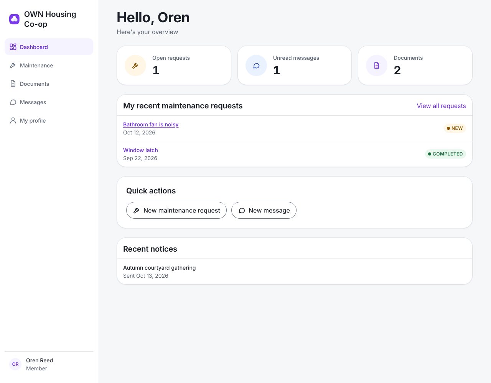
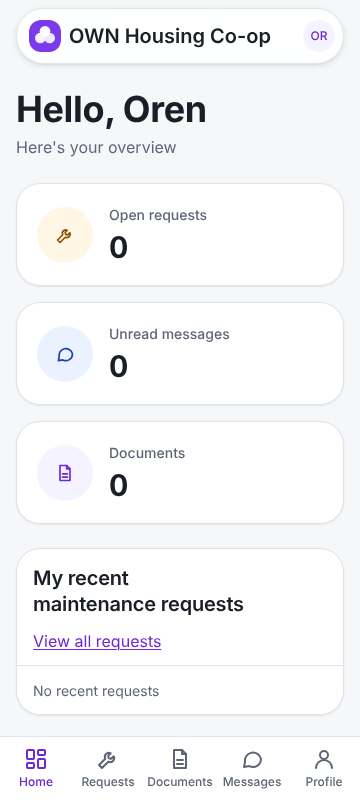

Member journey · Co-op platform
View the dashboard
Your calm place to start the day
One look tells you what is going on
1
A hello, by name
2
Three small cards
3
Your recent requests
1 · A hello, by name
“Here's your overview”
2 · Three small cards

Open requests, Unread messages and Documents
3 · My recent maintenance requests
1
New
2
Received
3
Started
4
Completed
4 · Tap “View all requests”
It opens your Requests page
Quick actions, notices, and the tabs
On a phone: Home, Requests, Documents, Messages, Profile
When it is quiet

“No recent requests” means all is quiet
In short
1
Sign in; your dashboard greets you
2
Look at the cards
3
Tap “View all requests” for more
Thank you
Questions, however small, are welcome.